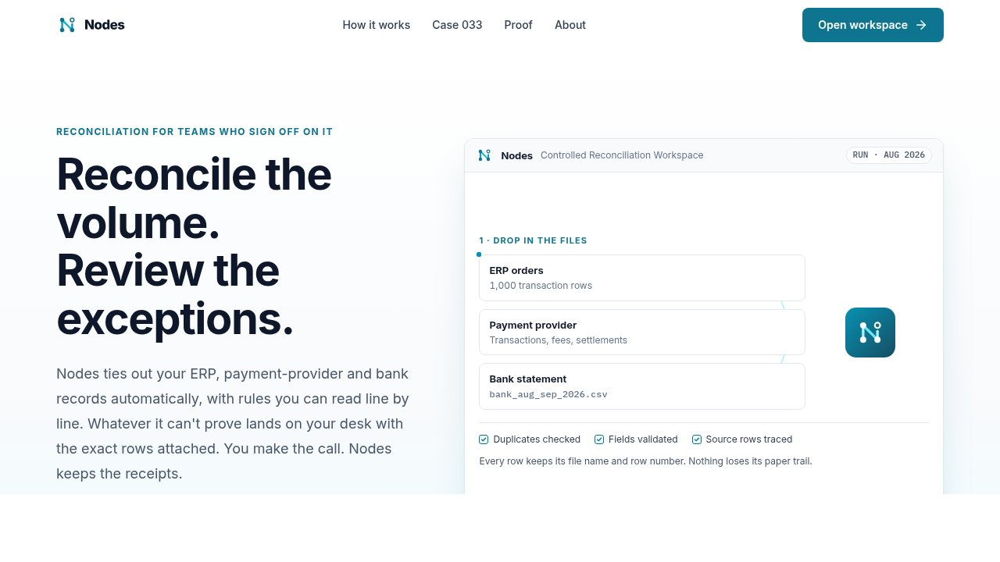

Nodes
The problem: every month-end I matched thousands of lines by hand. The answer: I built the system.
At Canon and Pearl Initiative, reconciliations ate the first week of every month. ERP, payment provider and bank never agreed, and the fix was a person with a spreadsheet. I knew exactly what a good reconciliation looked like. I just couldn't code it.
With AI coding tools I could. Nodes is a working reconciliation platform I specified and built end to end: a deterministic matching engine that does the accounting, a control pack of 18 checks, a review queue where a reviewer signs off every exception, and an AI layer that explains each gap in plain English but never decides. Every decision leaves an audit trail.
- Rules match, not the model
- 18 controls in the pack
- AI explains, a reviewer decides
